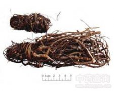

鸡骨草

拼音
Jī Gǔ Cǎo
别名
红母鸡草、石门坎、黄食草、细叶龙鳞草、大黄草
来源
本品为豆科植物广州相思子Abrus cantoniensis Hance的干燥全株。全年均可采挖，除去泥沙，干燥。
生境分布
生于山地或旷野灌木林边。分布广东、广西等地。产广东、广西。
药材特点
木质藤本，长达1米，常披散地上或缠绕其他植物上。主根粗壮，长达60厘米。茎细，深红紫色，幼嫩部分密被黄褐色毛。双数羽状复叶，小叶7～12对，倒卵状矩圆形或矩田形，长5～12毫米，宽3～5毫米，膜质，几无柄，先端截形而有小锐尖，基部浅心形，上面疏生祖毛，下面被紧贴的粗毛，叶脉向两面凸起；托叶成对着生，线状披针形；小托叶呈锥尖状。总状花序腋生，花长约6毫米；萼钟状；花冠突出，淡紫红色；雄蕊9，合生成管状，与旗瓣贴连，上部分离；子房近于无柄，花柱短。荚果矩圆形，扁平，疏生淡黄色毛，先端有尾状凸尖；种子4～5粒，矩圆形，扁平，光滑，成熟时黑褐色或淡黄色，有明显的种阜。花朋春、夏。
性状
本品根多呈圆锥形，上粗下细，有分枝，长短不一，直径0.5～1.5cm；表面灰棕色，粗糙，有细纵纹，支根极细，有的断落或留有残基；质硬。茎丛生，长50～100cm,直径约0.2cm；灰棕色至紫褐色，小枝纤细，疏被短柔毛。羽状复叶互生，小叶8～11对，多脱落，小叶矩圆形，长0.8～1.2cm，先端平截，有小突尖，下表面被伏毛。气微香，味微苦。
性味
甘、微苦，凉。
功能主治
清热解毒，舒肝止痛。用于黄疸，胁肋不舒，胃脘胀痛；急、慢性肝炎，乳腺炎。
用法用量
15～30g。
化学成分
全草含相思子碱胆碱、甾醇化合物、黄酮类、氨基酸、糖类。
药理作用
1：相思子碱腹腔注射：能降低小鼠肩部由葡萄球菌毒索引起的炎症反应；对兔的实验性贫血无治疗效果，高浓度（1：500）可抑制羊血球的溶解
摘录
《中国药典》